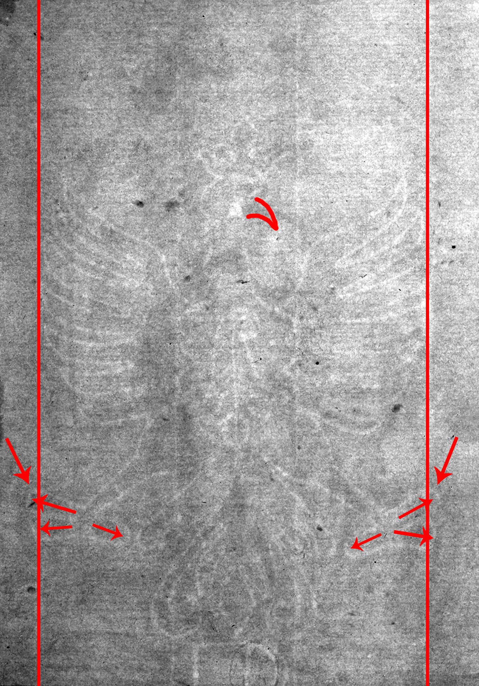

Single-Headed Eagle
See branch diagram↩ Back one step ↻ Restart this branch
Your watermark is Eagle with Basel Crosier, Single-Headed, B.a.b.
Watermark B.a.b. Can be distinguished by three features: the eagles’ beak-side foot crosses a chain line (marked with red), the ends of its feet are rounded, not pointed, and three claws extend from its foot.
________________________________________________________________________
This same watermark can be found on the following prints, both small in format:
- Abraham casting out Hagar and Ishmael, 1637, Metropolitan Museum of Art, New York.
- Abraham casting out Hagar and Ishmael, 1637, Library of Congress, Washington, D.C.
- Abraham casting out Hagar and Ishmael, 1637, Bibliothèque Nationale de France, Paris.
- The artist's mother seated at a table, circa 1634, former Ritman Collection, London.
(Erik Hinterding, Rembrandt as an Etcher, 2006, II, 106)
